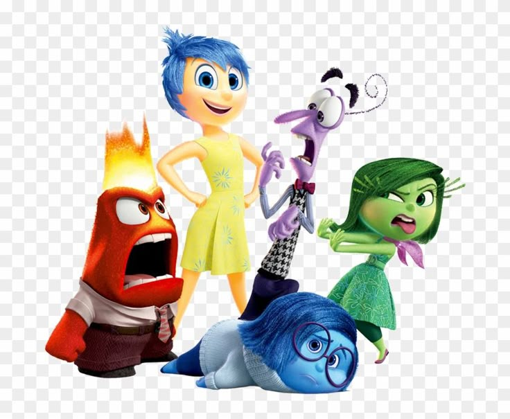

Home
Seja bem-vindo à Mente Mais Divertida do Mundo!
Aqui, as emoções ganham vida e mostram que sentir é uma das maiores aventuras humanas! Alegria, Tristeza, Medo, Raiva e Nojinho te convidam para conhecer a sala de controle da Riley — e quem sabe, entender melhor a sua própria também..
Curiosidades
- 1. Emoções com Voz e Personalidade: Cada emoção foi cuidadosamente criada com sua própria forma de falar e agir.
- 2. A Mente como um Parque: A cabeça da Riley tem ilhas da personalidade, trem do pensamento e uma fábrica de sonhos!
- 3. Emoções Crescem com a Gente: O painel de controle da Riley evolui no final do filme, mostrando como amadurecemos emocionalmente.
- 4. Psicologia no Roteiro: A Pixar consultou psicólogos e neurocientistas para deixar o filme mais realista e educativo.
- 5. Tristeza é Fundamental: Apesar de parecer negativa, a Tristeza é essencial para empatia, conexão e superação.
- 6. Memórias com Cor: Cada memória tem a cor da emoção dominante — e algumas têm várias cores, mostrando sentimentos mistos.